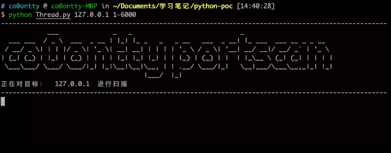
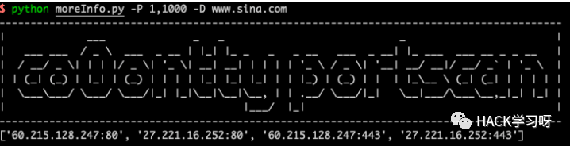

实战 | Python 编写端口扫描器
介绍：
本篇学习笔记将记录使用 python 编写 Scan 的学习路线，记录整个 python 扫描器的编写过程，记录从第一行代码到最新版本，对每个版本更新用到的技术进行详解
Version 1.0（socket 库）
使用 socket 库进行端口扫描：
更新日志：
调用 socket 中的库对目标进行扫描，并统计目标端口的开放情况
#!/usr/bin/python# -*- coding: UTF-8 -*-import sysfrom socket import *# import socket# 端口扫描模块def portScan(ip,portStart,portEnd):open_ports=[]for port in range(int(portStart),int(portEnd)+1):# 显示扫描百分比percent = float(port)*100/float(int(portEnd))sys.stdout.write("%.2f"%percent)sys.stdout.write("%\r")sys.stdout.flush()# 发送数据，尝试建立连接sock = socket(AF_INET, SOCK_STREAM)# sock = socket.socket(socket.AF_INET, socket.SOCK_STREAM)sock.settimeout(10)result = sock.connect_ex((ip,port))if result == 0:open_ports.append(port)passprint open_portspass# 获取ip和端口扫描范围def main():ip = sys.argv[1]port = sys.argv[2].split("-")portStart = port[0]portEnd = port[1]portScan(ip,portStart,portEnd)if __name__ == '__main__':main()
Version 1.1（Threadpool 多线程）
使用 Threadpool 进行多线程端口扫描：
更新日志：
调用 python 中的 Threadpool 模块，设置多线程多目标的端口进行扫描，增加扫描的效率
#!/usr/bin/python# -*- coding: UTF-8 -*-import socketimport sysfrom datetime import datetimefrom multiprocessing.dummy import Pool as ThreadPoolremote_server = sys.argv[1]targetport = sys.argv[2].split("-")startPort = targetport[0]endPort = targetport[1]remote_server_ip = socket.gethostbyname(remote_server)ports = []print '-' * 60print '正在对目标：', remote_server_ip + '进行扫描'print '-' * 60socket.setdefaulttimeout(0.5)def scan_port(port):try:s = socket.socket(2,1)res = s.connect_ex((remote_server_ip,port))if res == 0: # 如果端口开启 发送 hello 获取bannerprint 'Port {}: OPEN'.format(port)s.close()except Exception,e:print str(e.message)for i in range(int(startPort),int(endPort)+1):ports.append(i)# Check what time the scan startedt1 = datetime.now()# 创建线程pool = ThreadPool(processes = 32) # 设置线程数results = pool.map(scan_port,ports) # 设置需要使用多线程的函数名称，传递参数的集合，该函数会将传递参数的集合分条传递到函数中使用pool.close()pool.join()print '本次端口扫描共用时 ', datetime.now() - t1
演示：

Version 1.2 (optparse 库)
使用 optparse 对 python 使用过程的命令进行解析
更新日志：
调用 python 的 optparse 库，实现在运行该脚本的过程中使用“–host”等方式指定参数名称
#!/usr/bin/python# -*- coding: UTF-8 -*-import optparseimport socketimport sysfrom datetime import datetimefrom multiprocessing.dummy import Pool as ThreadPoolprint "------------------------------------------------------------------------------------------"print "| ___ _ _ _ |"print "| ___ ___ / _ \ ___ _ __ | |_| |_ _ _ _ __ ___ _ __| |_ ___ ___ __ _ _ __ |"print "| / __/ _ \| | | |/ _ \| '_ \| __| __| | | | | '_ \ / _ \| '__| __/ __|/ __/ _` | '_ \ |"print "| | (_| (_) | |_| | (_) | | | | |_| |_| |_| | | |_) | (_) | | | |_\__ \ (_| (_| | | | | |"print "| \___\___/ \___/ \___/|_| |_|\__|\__|\__, | | .__/ \___/|_| \__|___/\___\__,_|_| |_| |"print "| |___/ |_| |"print "------------------------------------------------------------------------------------------"parse=optparse.OptionParser(usage='python portscan.py -H 127.0.0.1 -P 60,90 -T 32',version="co0ontty portscan version:1.2")parse.add_option('-H','--Host',dest='host',action='store',type=str,metavar='host',help='Enter Host!!')parse.add_option('-P','--Port',dest='port',type=str,metavar='port',default='1,10000',help='Enter Port!!')parse.add_option('-T','--Thread',dest='thread',type=int,metavar='thread')parse.set_defaults(thread=32)options,args=parse.parse_args()# optparse.OptionParser usage=''介绍使用方式# dest='host',传递参数到名为host的变量# type='str',传递参数的类型# metavar='host', help中参数后的名称# help=''，help中的语句# parse.set_defaults(thread=32) 设置参数默认值的另一种方式# 当你将所有的命令行参数都定义好了的时候，我们需要调用parse_args()方法add_option()函数依次传入的参数：options,args=parse.parse_args()portList = options.port.split(",")startPort = portList[0]endPort = portList[1]remote_server_ip = socket.gethostbyname(options.host)# remote_server_info = socket.gethostbyname_ex(host)ports = []openPort = []print '正在对目标：'+remote_server_ip + ' 进行 '+str(options.thread)+' 线程扫描'socket.setdefaulttimeout(0.5)def scan_port(port):try:s = socket.socket(2,1)res = s.connect_ex((remote_server_ip,port))if res == 0:openPort.append(port)s.close()except Exception,e:print str(e.message)for i in range(int(startPort),int(endPort)+1):ports.append(i)# 扫描开始t1 = datetime.now()# 创建线程pool = ThreadPool(processes = int(options.thread))results = pool.map(scan_port,ports)pool.close()pool.join()print openPortprint '本次端口扫描共用时 ', datetime.now() - t1
Version 1.3 （gethostbyname_ex）
使用 gethostbyname_ex 函数获取目标的域名、ip 等信息
更新日志：
1、使用 gethostbyname_ex 函数实现对输入的域名进行解析
2、使用-D 参数传递域名，扫描器将对域名相关的 ip 进行端口扫描
3、对代码进行了模块化操作
#!/usr/bin/python# -*- coding: UTF-8 -*-import socket,sys,optparsefrom datetime import datetimefrom multiprocessing.dummy import Pool as ThreadPoolprint "------------------------------------------------------------------------------------------"print "| ___ _ _ _ |"print "| ___ ___ / _ \ ___ _ __ | |_| |_ _ _ _ __ ___ _ __| |_ ___ ___ __ _ _ __ |"print "| / __/ _ \| | | |/ _ \| '_ \| __| __| | | | | '_ \ / _ \| '__| __/ __|/ __/ _` | '_ \ |"print "| | (_| (_) | |_| | (_) | | | | |_| |_| |_| | | |_) | (_) | | | |_\__ \ (_| (_| | | | | |"print "| \___\___/ \___/ \___/|_| |_|\__|\__|\__, | | .__/ \___/|_| \__|___/\___\__,_|_| |_| |"print "| |___/ |_| |"print "| Blog: https://co0ontty.github.io |"print "------------------------------------------------------------------------------------------"def Ip_scan_port(port):socket.setdefaulttimeout(0.5)remote_server_ip = socket.gethostbyname(Ip_target)try:s = socket.socket(2,1)res = s.connect_ex((remote_server_ip,port))if res == 0:openPort.append(port)s.close()except Exception,e:print str(e.message)def Domain_scan_port(port):socket.setdefaulttimeout(0.5)for remote_server_ip in Ip_from_domain:try:s = socket.socket(2,1)res = s.connect_ex((remote_server_ip,port))if res == 0:# Domain_res = str(remote_server_ip)+":"+str(port)Domain_result.append(str(remote_server_ip)+":"+str(port))s.close()passexcept Exception as e:print str(e.message)def moreInfo(domainName):global Ip_from_domainIp_from_domain = []domainNames = socket.gethostbyname_ex(domainName)print "[+]Start domain Scan"for x in domainNames:if type(x) == list:for i in x:print "Find : "+str(i)+"\n"+" IP :"+str(socket.gethostbyname(i))Ip_from_domain.append(socket.gethostbyname(i))else:Ip_from_domain.append(socket.gethostbyname(x))Ip_from_domain = list(set(Ip_from_domain)) #去重start_domain_pool()def start_IP_Pool():pool = ThreadPool(processes = int(thread))results = pool.map(Ip_scan_port,ports)pool.close()pool.join()print openPortdef start_domain_pool():print "[+] Start portscan on those IP from "+str(startPort)+" to "+str(endPort)pool = ThreadPool(processes = int(thread))results = pool.map(Domain_scan_port,ports)pool.close()pool.join()for x in Domain_result:print "Find open port :"+str(x)passdef main():parse=optparse.OptionParser(usage='python portscan.py -H 127.0.0.1 -P 60,90 -T 32 or python portscan.py -D www.baidu.com -P 60,90 -T 32 ',version="co0ontty portscan version:1.0")parse.add_option('-H','--Host',dest='host',action='store',type=str,default="0")parse.add_option('-P','--Port',dest='port',type=str,default='1,10000')parse.add_option('-T','--Thread',dest='thread',type=int)parse.add_option('-D','--Domain',dest='domainName',type=str,default="0")parse.set_defaults(thread=32)options,args=parse.parse_args()global remote_server_ip,openPort,domainName,Ip_target,thread,openPort,ports,Domain_result,startPort,endPortIp_target = options.hostdomainName = options.domainNameportList = options.port.split(",")thread = options.threadstartPort = portList[0]endPort = portList[1]ports = []openPort = []Domain_result = []for i in range(int(startPort),int(endPort)+1):ports.append(i)if domainName == "0":print "[+]port scan :"+Ip_targetstart_IP_Pool()else:moreInfo(domainName)passif __name__ == '__main__':main()


点赞，转发，在看
原创投稿作者：co0ontty
作者博客：co0ontty.github.io